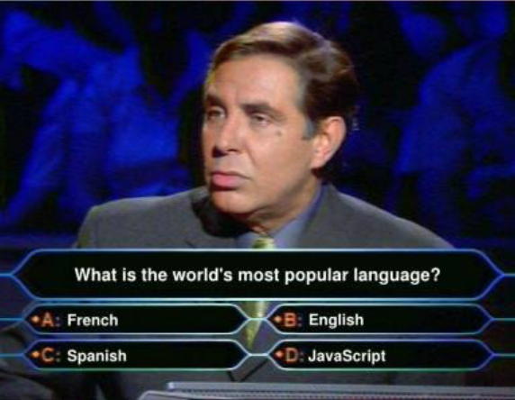
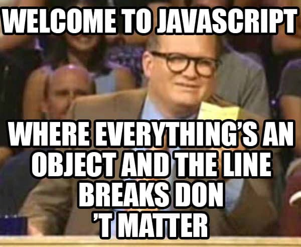

Javascript Language Features
Author: Hao Luo (@howlowck)

Javascript is an object-oriented and functional language.
Types
Javascript has no classes. However it has two types:
Primative Types
Simple data types
- Boolean (
trueorfalse) - null (
null) - undefined (
undefined) - number (
100or12.2) - string (
'hello') - Symbol (in ES2015)
let oldName = 'St Clair'
let newName = oldName
newName = 'Luo'
oldName
Reference Types
Reference Types are objects. An object is simply an unordered list of properties consisting with a name and a value. The value can be of either type (Primative or Reference).
let bot1 = {
name: 'Optimus Prime',
greet: function () {
return 'hi'
}
}
let bot2 = bot1
bot2.name = 'Bumblebee'
bot1
Functions
graph TB
subgraph objects
functions
arrays
...
end
subgraph primary types
strings
booleans
....
end
Defining a function in Javascript
Declaration:
function greet() {
return 'hello my name is Hao'
}
Function Expression:
var greet = function () {
return 'hello my name is Hao'
}
What's the difference?
Declarations are named functions, and function expressions can be anonymous functions.
Declarations are hoisted to the top of the function
greet()
function greet() {
return 'hello my name is Hao'
}
As oppose to:
anotherGreet()
var anotherGreet = function () {
return 'hello my name is Hao'
}
Function Expressions can't be hoisted because the the function can only be called or referenced through a variable.
Javascript is a functional language
Functions are treated as first-class citizens, which means they can do things like other types.
Functions can:
- be assigned to variables
- be parameters of another function
- be created and returned from another function
- have properties on the function like a regular class
In fact, functions are just objects. The only difference between a "function" and a regular object (ie {name: 'Kevin'}),is that a function can be evoked (or called).
Function Overloading
Javascript cannot overload a function based on differing function signatures like you can with Java.
function haosGreet (name) {
return 'hello ' + name
}
function haosGreet () {
return 'good morning!'
}
Functions in an object (and this keyword)
Remember functions can be defined/created anywhere. So let's create one in an object
var gabby = {
name: 'Gabby',
coffeeLeft: 5,
coffeeConsumed:0,
drinkCoffee: function () {
this.coffeeLeft--
this.coffeeConsumed++
return this.name + ' drank some coffee'
}
}
var kevin = {
name: 'Kevin',
coffeeLeft: 5,
coffeeConsumed: 0
}
// Can Kevin steal gabby's coffee by copying the way she drinks?
kevin.drink = gabby.drinkCoffee
Now what if gabby's drinkCoffee function is not even in an object?
var standaloneDrinkCoffee = gabby.drinkCoffee
// what happens if this function is called?
this keyword is the context of which the function is evoked. When you evoke a function as a object method, like so gabby.drinkCoffee(), the context is implied as being gabby. When you evoke the function outside of the object, it loses its context.
Sidenote: There is also another way you can use the context, but let's see how to explicitly set the context.
bind and call function methods
Note: Remember functions are just objects which can have any kind of properties, and properties can other functions. So functions can have other functions.
var gabbyDrinksCoffee = standaloneDrinkCoffee.bind(gabby)
// gabbyDrinksCoffee()
Or you can immediately evoke the function with an explicit context
standaloneDrinkCoffee.call(gabby)
A function inside of a function inside of an object
var ron = {
name: 'Ron',
coffeeLeft: 3,
coffeeConsumed: 0,
drinkCoffee: function () {
function sendAlert () {
console.log(this.name + ', get more coffee')
}
this.coffeeLeft--
this.coffeeConsumed++
if (this.coffeeLeft == -1) {
setTimeout(sendAlert, 2000)
return this.name + ', you drank too much coffee'
}
return this.name + ' drank some coffee'
}
}
ron.drinkCoffee()
ron.drinkCoffee()
ron.drinkCoffee()
// ron.drinkCoffee()
// how would you fix the issue?
This is the other way you'd lose the context of a function.
Javascript is a Object Oriented Language

There is no classes in Javascript. Everything is an object (except for primitive types). So how can you make a new instance of something based on another thing?
Javascript uses constructors and prototypes.
Constructors
Constructors are simply javascript functions. As conventions, constructor functions are usually capitalized.
you create a new instance by using the new keyword.
function Water() {
this.caffineLevel = 0
this.temperature = 0
this.heatUpInHeater = function () {
this.temperature = 50
}
}
var kevinsWater = new Water()
var gabbysWater = new Water()
var paulsWater = new Water()
kevinsWater.heatUpInHeater()
// is kevinsWater.heatUpInHeater the same function as gabbysWater.heatUpInHeater?
prototype property on a constructor function
When you create a function, an property named prototype is assigned to this function object with the value of an object. This object initially has a constructor property on it.
Whatever is in this prototype object, automatically gets shared across all of its instanciated objects.
function SmartWater() {
this.caffineLevel = 0
this.temperature = 0
}
SmartWater.prototype.heatUpInHeater = function () {
this.temperature = 60
}
var kevinsSmartWater = new SmartWater()
var gabbysSmartWater = new SmartWater()
kevinsSmartWater.heatUpInHeater === gabbysSmartWater.heatUpInHeater
You can dynamically change the behaviors of the a defined type.
kevinsSmartWater.heatUpInHeater()
// console.log('kevins water temp pre change', kevinsSmartWater.temperature)
SmartWater.prototype.heatUpInHeater = function () {
this.temperature = 100
}
kevinsSmartWater.heatUpInHeater()
// console.log('kevins water temp after change', kevinsSmartWater.temperature)
gabbysSmartWater.heatUpInHeater()
// console.log('gabbys water temp after change', gabbysSmartWater.temperature)
Inheritances
Javascript uses prototypes to create a prototypal chain which produces its inheritance structure.
- Every function has an property named
prototype(as we saw in the previous section). - Every object has a
[[prototype]]object on it (usually named__proto__, but not a spec standard).
When you create a function...
Everytime you create a function, Javascript puts an object in the prototype property onto that function.
This prototype property object has a property called constructor. this constructor simply references back to the function.
function Park(name) {
this.name = name
}
// Park.prototype
This prototype property object in the function is referenced in the [[prototype]] property of its instance objects.
var grantPark = new Park('Grant')
var proto = Object.getPrototypeOf(grantPark)
var proto2 = grantPark.__proto__
// how is this proto related to Park?
Object Inheritance
So every object has the [[prototype]] property (commonly named __proto__). You can actually "hijack" this property and reference this object to ANY object essentially changing the type of that object.
hijacking the __proto__ property:
var ironmanMk1 = {
name: 'Mk1',
altitude: 0,
takeOff: function () {
this.altitude: 100
}
}
var ironmanMk2 = {
name: 'Mk2',
autopilot: true
}
ironmanMk2.__proto__ = ironmanMk1
// ironmanMk2.takeOff
Object.create()
Object.create() is a "static" method on the base Object constructor function.
the function lets one quickly create an object by supplying the [[prototype]] (or __proto__) object, and the member properties (and its values).
var ironmanMk3 = Object.create(ironmanMk2, {
name: 'Mk3',
fireProjectile: function () {
return 'fired!'
}
})
// Object.getPrototypeOf(ironmanMk3)
How does an object find the value of a property?
Remember in every object there is a [[prototype]] object.
When you try to access a property (could be a primitive, object, or function), and it's not on the actual object. Javascript will look to the [[prototype]] object on the object, and see if the property is on there. If it's not on there, Javascript will look at the [[prototype]] on there, until it finds the value.
// ironmanMk3.name
// Object.getPrototypeOf(ironmanMk3)
// show [[prototype]] of [[prototype]] of ironmanMk3
// ironmanMk3.takeOff
Constructor Inheritance
Sometimes you'd like to inherite from the constructor function instead of an object. This works pretty much the same way as object inheritance with a few more considerations.
1. Call the parent constructor function
Many language allow you to quickly get the parent's constructor function using keywords like super or parent. Unfortunately, Javascript does not have that feature (until ES6).
However, you can steal the parent function by setting the context with call.
function CognitiveServiceClient(host, apiKey) {
this.host = host
this.apiKey = apiKey
}
CognitiveServiceClient.prototype.fetchGetJson = function (url) {
return fetch(this.host + url)
.then(function (res) {return res.json()})
}
function FaceApiClient(host, apiKey) {
CognitiveServiceClient.call(this, host, apiKey)
}
2. Assign the prototype and reference back the constructor
Remember when you created a function, the prototype is automatically set, and there is a property of a constructor that point itself back to the function. this constructor is then used to determine the typeof of its instanciated object.
Because of this, if we want to instanciate a FaceApiClient by calling client, and we want to setup proper prototypal chain then we have to set the constructor of FaceApiClient.prototype.constructo back to FaceApiClient.
FaceApiClient.prototype = Object.create(
CognitiveServiceClient.prototype, {
getPersonGroupList: function () {
return this.getFetchJson(this.host + '/person-groups')
},
//constructor: FaceApiClient
}
}
var client = new FaceApiClient()
Object.getPrototypeOf(Client)
Bundle all the concepts together...
To extend a constructor function you need to
- Create a function (studly case by convention)
- In the function, call the parent constructor function by explicitly setting the context
- Set the
prototypeof the function with an object that has the parent.prototype object as its[[prototype]], and theconstructormember property reference back to the function.
ES6 Features
That was a lot of information.. and you have to understand a lot about how Javascript works to create a simple "class"-like construct. Also this is often a pain point of development when you have to use call or bind all the time.
class keyword
class FancyCogServiceClient {
constructor (host, apiKey) {
this.host = host
this.apiKey = apiKey
}
getFetchJson(path) {
return fetch(this.host + path)
.then((res) => {
return res.json
})
}
}
class FancyFaceApiClient extends FancyCogServiceClient {
constructor(host, apiKey) {
super(host, apiKey)
}
getPersonGroupList () {
return this.getFetchJson(this.host + '/person-groups')
}
}
var fancyFaceApiClient = new FancyFaceApiClient('https://cogservices.com/face/v1', 'secret')
arrow functions
Many say arrow functions are a shortcut to anonymous functions. However it is a little more than that.
Arrow functions do not have the concept of this or arguments, that this means is that the this keyword will refer to the parent scope of where the arrow function is defined.